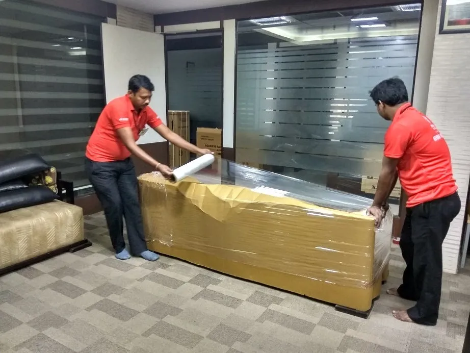

عربية نص نقل لنقل العفش بالرياض مع افضل شركة 0541145506

هل تخطط لنقل عفش منزلك أو مكتبك في الرياض وتخشى من التعقيدات التي ترافق هذه المهمة؟ مع ازدحام الشوارع وتنوع احتياجات النقل، أصبح الاعتماد على عربية نص نقل لنقل العفش بالرياض حلاً لا غنى عنه لأهالي العاصمة الذين يبحثون عن خدمات مضمونة توفر الوقت والجهد وتوفر هذه الخدمة الشركة المختصه بالنقل وهي شركة نقل الرياض
0541145506 اضغط هنا للتواصل عبر الواتساب أو اتصل بنا.
في عالم مليء بالخيارات، قد يبدو اختيار الشركة المناسبة تحديًا حقيقيًا، خاصةً مع تزايد الحاجة إلى ضمان سلامة الأثاث من الخدوش أو الكسر، والحفاظ على التكاليف ضمن النطاق المعقول.
في هذه المقالة، سنكشف لك عن أسرار تجعل عملية نقل عفشك تجربة سلسة خالية من المفاجآت، بدءًا من تقنيات التغليف الاحترافية، وصولًا إلى اختيار الوقت الأمثل للتنقل بين أحياء الرياض.
سواء كنت تنقل عفشًا من فيلا فاخرة أو شقة صغيرة، فإن عربية نص نقل لنقل العفش بالرياض تقدم حلولًا مخصصة تناسب كل مساحة وكل نوعية أثاث، مع مراعاة العوامل الفريدة التي تميز المدينة مثل المناخ وطبيعة الطرق.
لن نكتفي فقط بنقل المعلومات النظرية، بل سنستند إلى تجارب حقيقية وخبرات عملية لنساعدك في اتخاذ قرارات ذكية.
هل تعلم أن بعض أخطاء النقل الشائعة قد تُكبدك خسائر مادية تصل إلى آلاف الريالات؟ أو أن التخطيط الجيد قد يُقلص وقت العملية إلى النصف؟ هنا ستجد إجابات شاملة، مع نصائح مُجرَّبة من الخبراء لتجنب الحوادث وتحقيق نقل آمن وفعال.
استعد لاكتشاف كيف تحول مهمة نقل العفش من كابوس مرهق إلى تجربة منظمة تتناغم مع إيقاع حياتك في الرياض، دون حشو أو تعقيدات غير ضرورية.

ضرورة الاستعانة بعربية نص نقل لنقل العفش بالرياض
قد تبدو عملية نقل العفش مهمة بسيطة للوهلة الأولى، لكن الواقع يثبت أن تنفيذها دون خسائر يتطلب أكثر من مجرد سيارة عادية وجهود فردية.
في مدينة كبيرة ومزدحمة مثل الرياض، حيث تتنوع طبيعة المساكن من الفلل الواسعة إلى الشقق العصرية، تبرز ضرورة الاستعانة بعربية نص نقل لنقل العفش بالرياض كخيار استراتيجي لحماية الأثاث من التلف وتوفير الوقت والجهد.
أهمية عربية نص نقل لنقل العفش بالرياض
هنا يأتي دور عربية نص نقل لنقل العفش بالرياض المصممة خصيصًا لهذه المهام، فهي مزودة بخصائص مثل: الجدران الداخلية المبطنة لمنع الاحتكاك، وأنظمة تثبيت ذكية تحافظ على توازن الأثاث حتى على الطرق الوعرة، ومساحات تخزين مُقسَّمة تُنظم القطع حسب حجمها وحساسيتها.
لكن السؤال الأهم: كيف تختار الشركة المناسبة التي توفر هذه الخدمة بمعايير عالية؟ الإجابة تكمن في شركة نقل الرياض الرائدة في مجال نقل العفش بالرياض، والتي حوَّلت تجربة النقل من مهمة هشة إلى عملية منظمة باحترافية.
مميزات عربية نص نقل لنقل العفش بالرياض من شركة نقل الرياض
في ظل تزايد احتياجات سكان الرياض لنقل عفش آمن وفعال، تبرز عربية نص نقل لنقل العفش بالرياض كحل استثنائي يجمع بين التكنولوجيا الحديثة والخبرة الميدانية.
من أبرز المميزات التي تقدمها هذه الخدمة هي التصميم الذكي للعربات، حيث تصنع جدرانها الداخلية من مواد عازلة للصدمات، مع وجود أحزمة تثبيت محكمة تحافظ على توازن الأثاث حتى أثناء التنقل بين أحياء الرياض.
اكتشف باقي خداماتنا من هنا
شركة نقل الرياض أفضل شركة تأجير عربية نص نقل لنقل العفش بالرياض
في عالم تزداد فيه صعوبة العثور على خدمات نقل عفش تلبي معايير الجودة والاحترافية، تتفرد شركة نقل الرياض كخيار لا ينافس في مجال تأجير عربية نص نقل لنقل العفش بالرياض، حيث تجمع بين الخبرة الطويلة والابتكار التكنولوجي لضمان تجربة نقل استثنائية.
إن نقل الأثاث في مدينة كالرياض يتطلب أكثر من مجرد سيارة عادية، فهو يحتاج إلى خطة مدروسة، وعربات مجهزة، وفريق خبير يُدرك تفاصيل المدينة من طقس حار إلى طرق مزدحمة.
أسرار نقل العفش بدون خدش: دليلك لحماية أثاثك خطوة بخطوة
نقل العفش قد يتحول إلى كابوس حقيقي إذا لم تكن مستعدًا جيدًا، خاصةً عندما يتعلق الأمر بحماية أثاثك الثمين من الخدوش أو التلف الذي قد ينتج عن الاحتكاك أو سوء التغليف.
لكن ماذا لو أخبرناك أن هناك أسرارًا مجربة تحافظ على قطعك الفريدة كأنها لم تتحرك من مكانها؟ سواء كنت تنقل عفش منزلك أو مكتبك، فإن الاعتماد على عربية نص نقل لنقل العفش بالرياض يعد الحل الأمثل لتفادي هذه المخاطر.
في النهاية، سواء قررت تنفيذ هذه الخطوات بنفسك أو الاستعانة بخبراء النقل، فإن شركة نقل الرياض تظل الخيار الأذكى لتجنب تلف العفش، حيث تجمع بين الخبرة الطويلة في نقل الأثاث بالرياض وأدوات متطورة تحافظ على كل قطعة كما هي. لا تدع الخدوش الصغيرة تقلل من قيمة أثاثك، فالاستعداد الجيد واختيار الشركة المناسبة هما سر نجاحك واتصل بنا 0541145506.